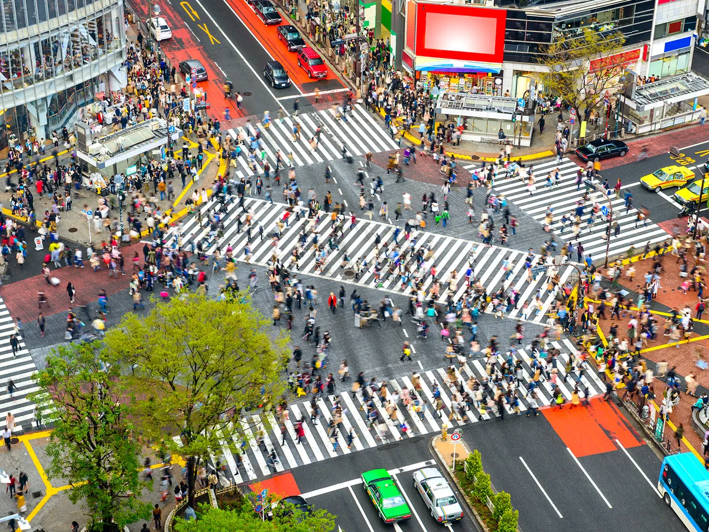

Tokyo, Japan
Experience the perfect blend of tradition and technology in Japan's bustling capital. From ancient temples to futuristic skyscrapers, Tokyo offers an unforgettable journey through time.
Statistics
- Population: 37 million (metro area)
- Area: 2,194 km²
- Founded: 1457
- Time Zone: JST (UTC+9)
Weather

Temperature: 15°C
Wind Speed: 8 km/h
Wind Chill: Calculating...
Notable Places

Sensoji Temple
Tokyo's oldest Buddhist temple, founded in 645 CE.

Shibuya Crossing
The world's busiest pedestrian crossing.

Tokyo Skytree
The world's tallest tower at 634 meters.